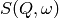
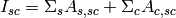
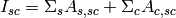

Table of Contents
The Indirect Data Analysis interface is a collection of tools within MantidPlot for analysing reduced data from indirect geometry spectrometers, such as IRIS and OSIRIS.
The majority of the functions used within this interface can be used with both reduced files (_red.nxs) and workspaces (_red) created using the Indirect Data Reduction interface or using  files (_sqw.nxs) and workspaces (_sqw) created using either the Indirect Data Reduction interface or taken from a bespoke algorithm or auto reduction.

Provides an interface for the ElasticWindow algorithm, with the option of selecting the range to integrate over as well as the background range. An on-screen plot is also provided.
For workspaces that have a sample log or have a sample log file available in the Mantid data search paths that contains the sample environment information the ELF workspace can also be normalised to the lowest temperature run in the range of input files.

Given either a saved NeXus file or workspace generated using the ElWin tab, this
tab fits  vs.
vs.  with a straight line for each
run specified to give the Mean Square Displacement (MSD). It then plots the MSD
as function of run number.
with a straight line for each
run specified to give the Mean Square Displacement (MSD). It then plots the MSD
as function of run number.
MSDFit searches for the log files named <runnumber>_sample.txt in your chosen raw file directory (the name ‘sample’ is for OSIRIS). If they exist the temperature is read and the MSD is plotted versus temperature; if they do not exist the MSD is plotted versus run number (last 3 digits).
The fitted parameters for all runs are in _msd_Table and the <u2> in _msd. To
run the Sequential fit a workspace named <inst><first-run>_to_<last-run>_lnI is
created of  v. for all runs. A contour or 3D plot of
this may be of interest.
v. for all runs. A contour or 3D plot of
this may be of interest.
A sequential fit is run by clicking the Run button at the bottom of the tab, a single fit can be done using the Fit Single Spectrum button underneath the preview plot.
 .
.
Given sample and resolution inputs, carries out a fit as per the theory detailed in the TransformToIqt algorithm.
 file (_sqw.nxs) or workspace (_sqw). file (_sqw.nxs) or workspace (_sqw).
file (_sqw.nxs) or workspace (_sqw). file (_sqw.nxs) or workspace (_sqw).As a bin width that is a factor of the binning range is required for this analysis the bin width is calculated automatically based on the binning range and the number of desired bins in the output which is in turn calculated by reducing the number of sample bins by a given factor.
The calculated binning parameters are displayed alongside the binning options:

I(Q, t) Fit provides a simplified interface for controlling various fitting functions (see the Fit algorithm for more info). The functions are also available via the fit wizard.
Additionally, in the bottom-right of the interface there are options for doing a sequential fit. This is where the program loops through each spectrum in the input workspace, using the fitted values from the previous spectrum as input values for fitting the next. This is done by means of the PlotPeakByLogValue algorithm.
A sequential fit is run by clicking the Run button at the bottom of the tab, a single fit can be done using the Fit Single Spectrum button underneath the preview plot.

Similarly to FuryFit, ConvFit provides a simplified interface for controlling various fitting functions (see the Fit algorithm for more info). The functions are also available via the fit wizard.
Additionally, in the bottom-right of the interface there are options for doing a sequential fit. This is where the program loops through each spectrum in the input workspace, using the fitted values from the previous spectrum as input values for fitting the next. This is done by means of the PlotPeakByLogValue algorithm.
A sequential fit is run by clicking the Run button at the bottom of the tab, a single fit can be done using the Fit Single Spectrum button underneath the preview plot.
The model used to perform fitting is described in the following tree, note that everything under the Model section is optional and determined by the Fit Type and Use Delta Function options in the interface.
Note that it is the Inelastic variants of DiffSphere and DiffRotDiscreteCircle that are used in this interface.
The Temperature Correction is a UserFunction with the
formula  where
where
 is the temperature in Kelvin.
is the temperature in Kelvin.
file (_sqw.nxs) or workspace (_sqw). file (_sqw.nxs) or workspace (_sqw).The measured data  is proportional to the convolution of the
scattering law with the resolution function
is proportional to the convolution of the
scattering law with the resolution function  of the spectrometer via
of the spectrometer via  . The traditional method of analysis has been to fit the measured
with an appropriate set of functions related to the form of
predicted by theory.
. The traditional method of analysis has been to fit the measured
with an appropriate set of functions related to the form of
predicted by theory.
and the  have the form of a Lorentzian - a
situation which is almost correct for reactor based backscattering
spectrometers such as IN10 & IN16 at ILL. The convolution of two Lorentzians
is itself a Lorentzian so that the spectrum of the measured and resolution
data can both just be fitted with Lorentzians. The broadening of the sample
spectrum is then just the difference of the two widths. have a simple functional form and the convolution is also a function
containing the parameters of the and R(Q, omega) functions.
The convoluted function may then be fitted to the data to provide the
parameters. An example would be the case where the is a
Lorentzian and the is a Gaussian. does not have a simple function
form so that the measured data has to be convoluted numerically with the
function to provide an estimate of the sample scattering.
The result is least-squares fitted to the measured data to provide values for
the parameters in the function.
have the form of a Lorentzian - a
situation which is almost correct for reactor based backscattering
spectrometers such as IN10 & IN16 at ILL. The convolution of two Lorentzians
is itself a Lorentzian so that the spectrum of the measured and resolution
data can both just be fitted with Lorentzians. The broadening of the sample
spectrum is then just the difference of the two widths. have a simple functional form and the convolution is also a function
containing the parameters of the and R(Q, omega) functions.
The convoluted function may then be fitted to the data to provide the
parameters. An example would be the case where the is a
Lorentzian and the is a Gaussian. does not have a simple function
form so that the measured data has to be convoluted numerically with the
function to provide an estimate of the sample scattering.
The result is least-squares fitted to the measured data to provide values for
the parameters in the function.This latter form of peak fitting is provided by SWIFT. It employs a least-squares algorithm which requires the derivatives of the fitting function with respect to its parameters in order to be faster and more efficient than those algorithms which calculate the derivatives numerically. To do this the assumption is made that the derivative of a convolution is equal to the convolution of the derivative-as the derivative and the convolution are performed over different variables (function parameters and energy transfer respectively) this should be correct. A flat background is subtracted from the resolution data before the convolution is performed.
Four types of sample function are available for :
 in the form of
in the form of  where
where  can
be 2, 3 or 4. The Full Width Half-Maximum (FWHM) then has a Q-dependence
(power law) of the form
can
be 2, 3 or 4. The Full Width Half-Maximum (FWHM) then has a Q-dependence
(power law) of the form  . The has been numerically
Fourier transformed into and the
have been fitted with functions of the form of a modified Lorentzian. These
latter functions are used in the energy fitting procedures.
. The has been numerically
Fourier transformed into and the
have been fitted with functions of the form of a modified Lorentzian. These
latter functions are used in the energy fitting procedures.References:

Calculates absorption corrections in the Paalman & Pings absorption factors that could be applied to the data when given information about the sample (and optionally can) geometry.
file (_sqw.nxs) or workspace (_sqw). file (_sqw.nxs) or workspace (_sqw). ,
,  ,
,  and
and
 workspaces as spectra plots.
workspaces as spectra plots.Depending on the shape of the sample different parameters for the sample dimension are required and are detailed below.

The calculation for a flat plate geometry is performed by the FlatPlatePaalmanPingsCorrection algorithm.
 ...
...Warning
This mode is only available on Windows

The calculation for a cylindrical geometry is performed by the CylinderPaalmanPingsCorrection algorithm, this algorithm is currently only available on Windows as it uses FORTRAN code dependant of F2Py.
.....Warning
This mode is only available on Windows
The calculation for an annular geometry is performed by the CylinderPaalmanPingsCorrection algorithm, this algorithm is currently only available on Windows as it uses FORTRAN code dependant of F2Py.
The options here are the same as for Cylinder.
The main correction to be applied to neutron scattering data is that for absorption both in the sample and its container, when present. For flat plate geometry, the corrections can be analytical and have been discussed for example by Carlile [1]. The situation for cylindrical geometry is more complex and requires numerical integration. These techniques are well known and used in liquid and amorphous diffraction, and are described in the ATLAS manual [2].
The absorption corrections use the formulism of Paalman and Pings [3] and
involve the attenuation factors  where
where  refers to
scattering and
refers to
scattering and  attenuation. For example, is the
attenuation factor for scattering in the sample and attenuation in the sample
plus container. If the scattering cross sections for sample and container are
attenuation. For example, is the
attenuation factor for scattering in the sample and attenuation in the sample
plus container. If the scattering cross sections for sample and container are
 and
and  respectively, then the measured
scattering from the empty container is
respectively, then the measured
scattering from the empty container is  and
that from the sample plus container is , thus
and
that from the sample plus container is , thus  .
.
References:
The Apply Corrections tab applies the corrections calculated in the Calculate Corrections tab of the Indirect Data Analysis interface.
This uses the ApplyPaalmanPingsCorrection algorithm to apply absorption corrections in
the form of the Paalman & Pings correction factors. When Use Can is disabled
only the factor must be provided, when using a container the
additional factors must be provided: , and
.
Once run the corrected output and can correction is shown in the preview plot, the Spectrum spin box can be used to scroll through each spectrum. Note that when this plot shows the result of a calculation the X axis is always in wavelength, however when data is initially selected the X axis unit matches that of the sample workspace.
The input and container workspaces will be converted to wavelength (using ConvertUnits) if they do not already have wavelength as their X unit.
The binning of the sample, container and corrections factor workspace must all match, if the sample and container do not match you will be given the option to rebin (using RebinToWorkspace) the sample to match the container, if the correction factors do not match you will be given the option to interpolate (SplineInterpolation) the correction factor to match the sample.
file (_sqw.nxs) or workspace (_sqw). file (_sqw.nxs) or workspace (_sqw).
The Absorption Corrections tab provides a cross platform alternative to the previous Calculate and Apply Corrections tabs.

Flat plate calculations are provided by the IndirectFlatPlateAbsorption algorithm.
......
Annulus calculations are provided by the IndirectAnnulusAbsorption algorithm.
....
Cylinder calculations are provided by the IndirectCylinderAbsorption algorithm.
..Categories: Interfaces | Indirect
{kind=link}
{kind=link}
{kind=link}